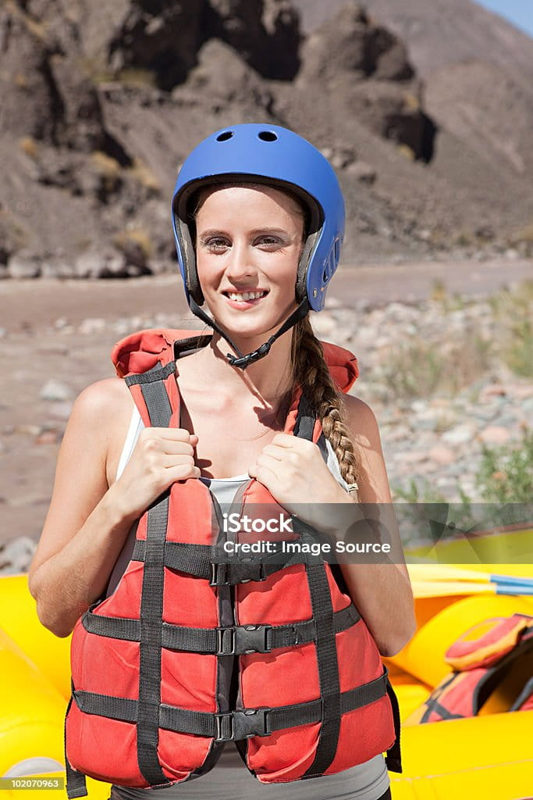

Rapid Travel Adventures is a company driven by a passion for exploration and the untamed power of nature. Our purpose is to connect people with the thrill of white-water rafting while fostering respect for the rivers, landscapes, and communities we encounter. Our mission is to deliver unforgettable adventure experiences that balance excitement, safety, and environmental responsibility. We believe in adventure with purpose — that every rapid conquered brings personal growth, teamwork, and appreciation for the natural world. Our creed is simple.
